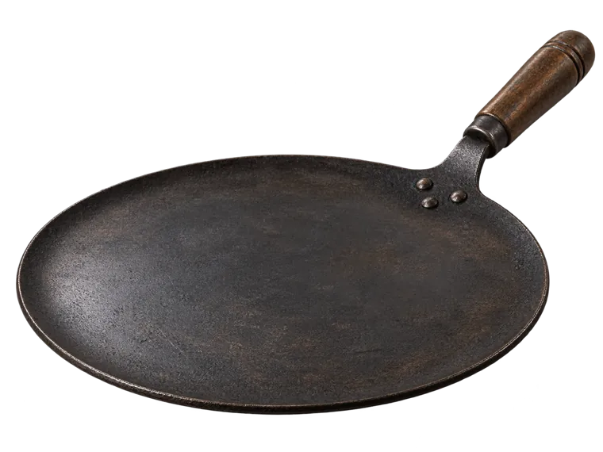

01
Aata grinding
Fresh wheat flour, ground to order. Our modern heat extraction system removes excess heat during grinding.
The warmth of a freshly cooked Roti. The comfort of a familiar meal. Bring home freshly ground Aata for the rotis you make every day.
